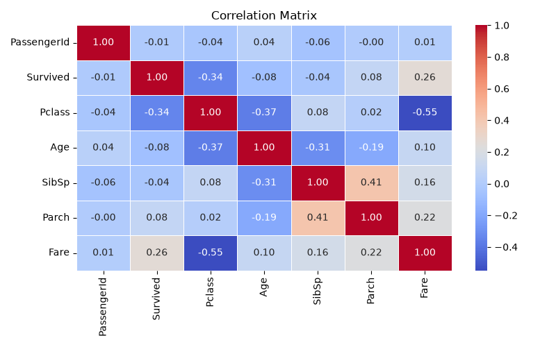
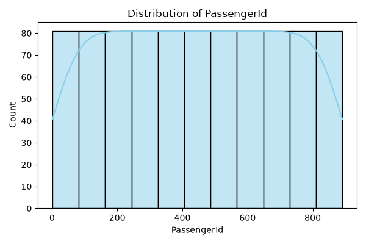
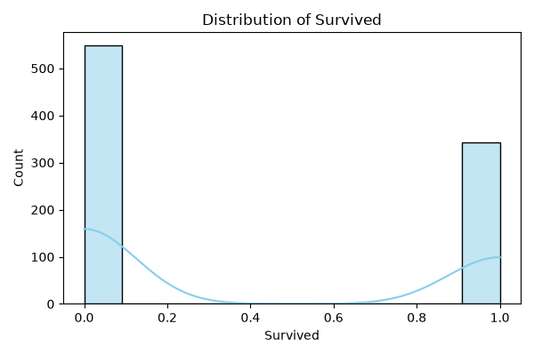
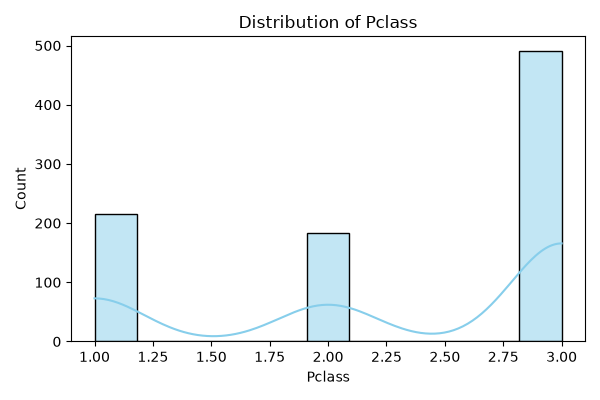
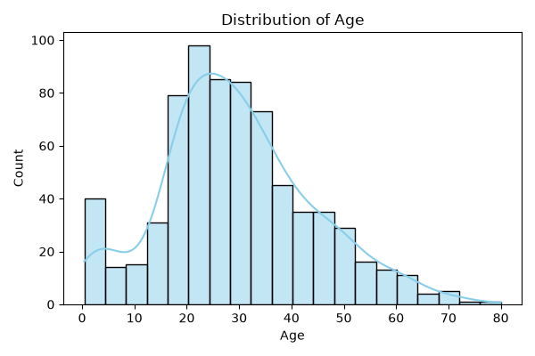

| Column | Type | Missing Values | Missing (%) | Unique Values |
|---|---|---|---|---|
| PassengerId | int64 | 0 | 0.00 | 891 |
| Survived | int64 | 0 | 0.00 | 2 |
| Pclass | int64 | 0 | 0.00 | 3 |
| Name | object | 0 | 0.00 | 891 |
| Sex | object | 0 | 0.00 | 2 |
| Age | float64 | 177 | 19.87 | 88 |
| SibSp | int64 | 0 | 0.00 | 7 |
| Parch | int64 | 0 | 0.00 | 7 |
| Ticket | object | 0 | 0.00 | 681 |
| Fare | float64 | 0 | 0.00 | 248 |
| Cabin | object | 687 | 77.10 | 147 |
| Embarked | object | 2 | 0.22 | 3 |
| Column | Q1 (25%) | Q3 (75%) | IQR | Outlier Count |
|---|---|---|---|---|
| PassengerId | 223.50 | 668.5 | 445.00 | 0 |
| Survived | 0.00 | 1.0 | 1.00 | 0 |
| Pclass | 2.00 | 3.0 | 1.00 | 0 |
| Age | 20.12 | 38.0 | 17.88 | 11 |
| SibSp | 0.00 | 1.0 | 1.00 | 46 |
| Parch | 0.00 | 0.0 | 0.00 | 213 |
| Fare | 7.91 | 31.0 | 23.09 | 116 |




